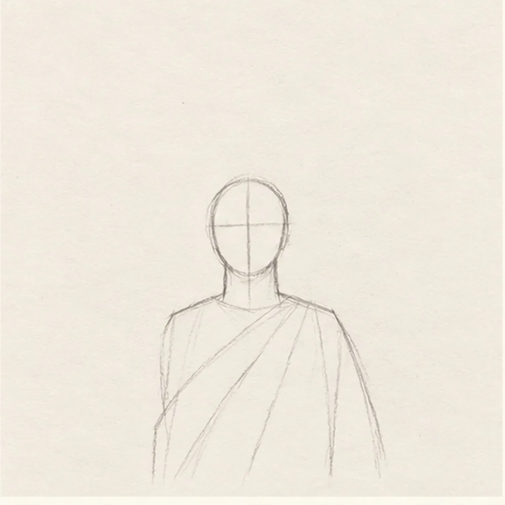
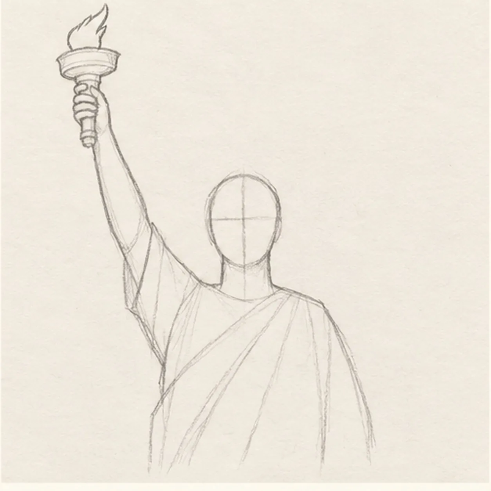
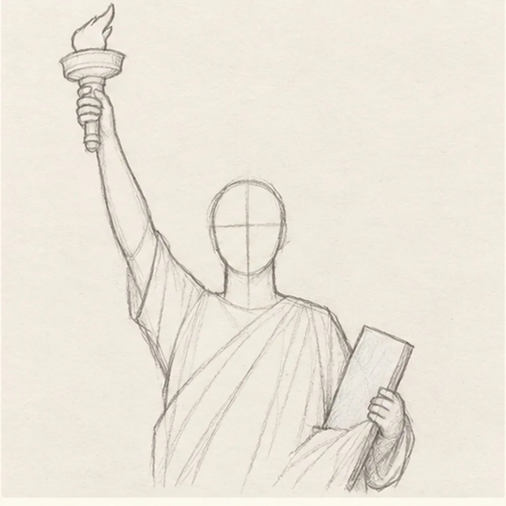
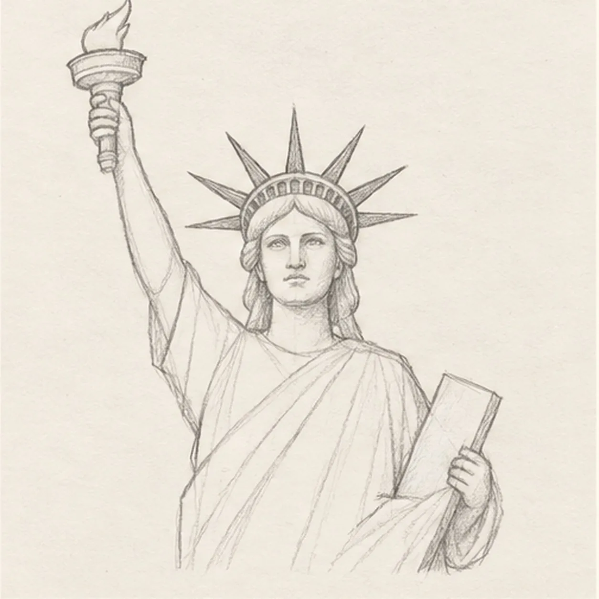
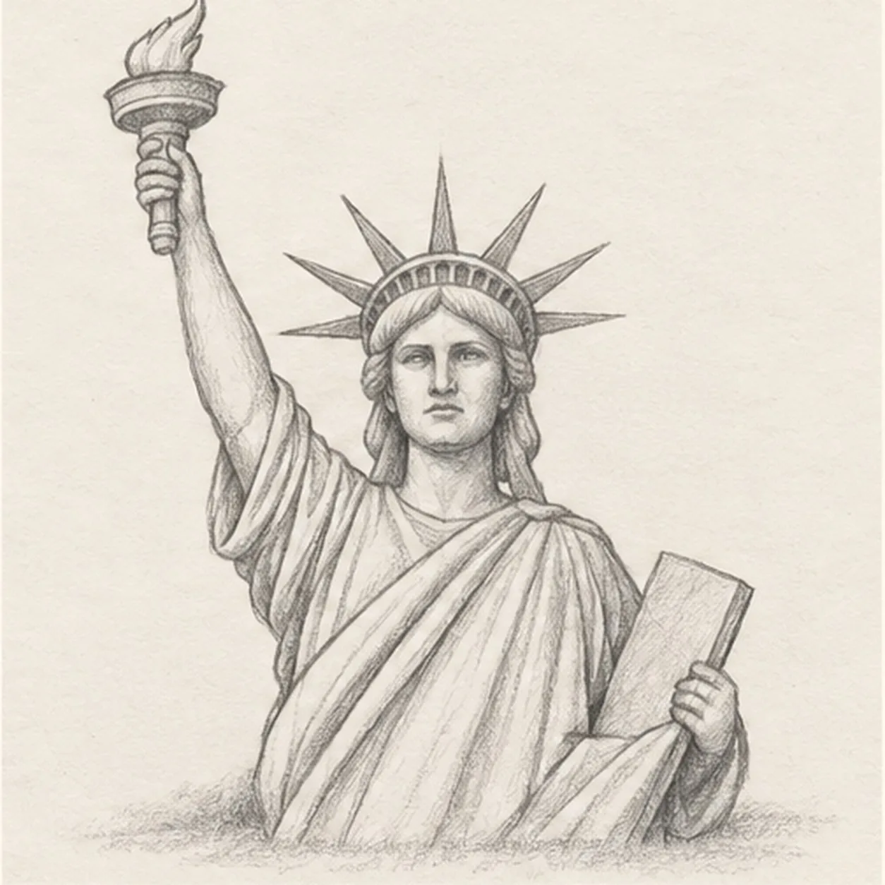

From the archive
Let's draw the Statue of Liberty
Treat this as one small practice round: build the subject lightly, notice the shapes, then darken only the lines that help the finished sketch.
-
01

Set the head and robe
Draw a small upright oval for the head, add one pale center line and one pale eye line, then taper two short neck lines into sloping shoulders and one simplified robe torso. Add a few pale diagonal drape routes, keeping clear paper above the right shoulder for the torch.
Sketch tip: Keep the oval and torso light and compact. The head axes locate the later face, while the diagonal routes only reserve the robe flow.
-
02

Raise the torch arm
Keep the pale head axes and robe routes. From the figure's right shoulder, draw one arm rising toward the upper left with a narrow sleeve and visible hand. Continue it into one straight ringed torch handle, one shallow bowl, and one simple flame.
Sketch tip: Trace the connection from shoulder to elbow, wrist, hand, handle, bowl, and flame. Every part should touch the next without floating.
-
03

Hold the tablet
Keep the pale head axes and robe routes. Bend the left arm across the lower chest and tuck one plain rectangular tablet against the figure's left side. Stop the robe lines behind the forearm and tablet.
Sketch tip: Check the overlap order: forearm in front, tablet next, robe behind. Leave the tablet blank so its silhouette stays clear.
-
04

Build the face and crown
Use the pale head axes to place two level eyes, a short straight nose, and one calm closed mouth. Add wavy hair, one crown band, and exactly seven separate pointed rays, then soften only the two head axes after the features replace them.
Sketch tip: Count the rays from left to right before darkening the face. Keep the robe routes pale and untouched for the next step.
-
05

Model the monument
Follow the pale routes to draw the long robe and sleeve folds, soften only unused guide fragments, add graphite modeling across the established face, crown, torch, arms, tablet, and cloth, and place one broken shadow beneath the bust.
Sketch tip: Darken overlap pockets under the raised sleeve and tablet arm, then let the broad robe planes stay lighter. Keep every contour and all seven rays fixed.
-
06

Color the harbor monument
Layer muted sea green lightly across the established statue, warm ochre inside the flame, and cool gray in the same broken shadow. Deepen only the existing graphite values, preserve paper highlights, and add no new contours.
Sketch tip: Use long colored-pencil strokes that follow the arms and robe folds. Count seven rays, one torch, and one tablet, then stop while the paper grain still shows.


![Handmade graphite and restrained colored-pencil sketch of one side-view praying mantis angled upward on a warm-brown twig with one pale-olive thorax, one tapered abdomen, one triangular head, exactly two long antennae, one dark near eye with a paper highlight, one visible folded grasping foreleg with inner spines, exactly four long walking legs touching the twig, one muted-green folded wing, exactly three exposed abdomen bands, exactly two attached green leaves, visible paper tooth, and one broken graphite shadow](../assets/praying-mantis-on-a-twig-finished-v1.webp)